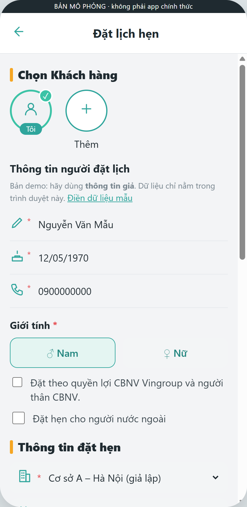
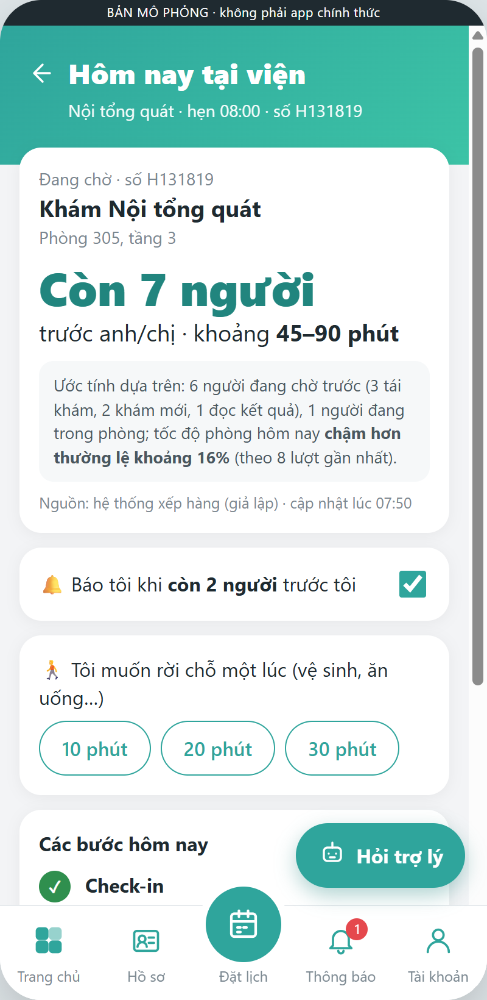
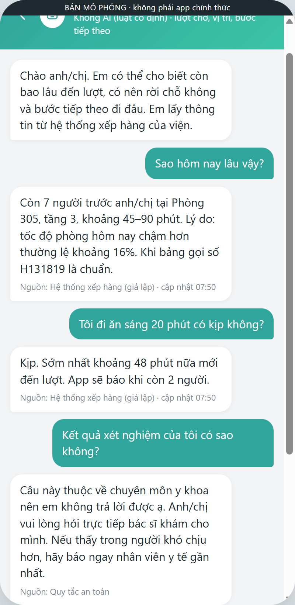
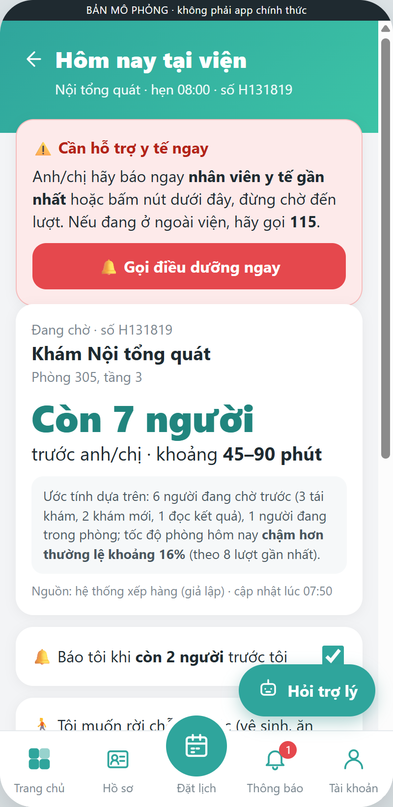

Người bệnh không chỉ khổ vì chờ lâu, mà vì không biết phải chờ bao lâu.
[Đào Bình Minh] · [K3] · 20/10/2026
50 câu, phủ 5 khoảnh khắc: đặt lịch, check-in, chờ, kết quả, tái khám. Có xin đồng ý, ẩn danh P1–P5.
MyVinmec: có đặt lịch, nhưng khi người bệnh đã đến viện thì app không còn đi cùng họ.
SingHealth (Singapore) · Shanghai Children's (Trung Quốc) · HUG Genève (Thuỵ Sĩ)
Phương thức phỏng vấn: điền form có cấu trúc (Google Form, 50 câu) · người được phỏng vấn: người thân trong gia đình · có xin đồng ý trước, ẩn danh P1–P5, chỉ hỏi về trải nghiệm dịch vụ.
| Tín hiệu | Đếm |
|---|---|
| Chờ là bước lâu hoặc khó chịu nhất | 4/5 |
| Không biết còn bao lâu đến lượt | 4/5 |
| Không dám rời chỗ vì sợ lỡ lượt | 4/5 |
| Có hẹn vẫn chờ thủ tục lâu | 4/4 |
| Không ai báo bước tiếp theo | 3/5 |
| Chưa từng đặt lịch qua app | 5/5 |
P1, P3: có thể bỏ tái khám vì "mất thời gian chờ đợi".
P2 tự khai: chờ đăng ký hơn 1h + chờ khám 40p + chờ kết quả gần 2h ≈ 3h40 chỉ để chờ, dù vẫn chấm buổi khám 9/10.
Số bác sĩ, số phòng nằm ngoài tầm với của một nhóm 2 người. Còn sự bất định thì có thể giảm bằng thông tin. Maister (1985): chờ không biết trước cảm thấy dài hơn chờ có thời hạn rõ.
Đăng ký trên app trước giờ hẹn 60–90 phút; xem còn bao nhiêu người và trạm tiếp theo; cập nhật 5 phút/lần; không ưu tiên người dùng app.
→ Hiện "còn N người" + bước tiếp theo; công bằng với người không dùng app.
Báo trước 15 phút. Thời gian chờ trung bình 126 → 33 phút (so sánh trước–sau). Nhưng chỉ ~18% người bệnh dùng.
→ Đặt vào kênh người bệnh đã dùng sẵn; tỉ lệ người dùng là nút thắt; không hứa trước con số.
Ca nhẹ được rời khu chờ, SMS gọi quay lại; nhắc mỗi 20 phút, tối đa 4 lần. 97% hài lòng. Loại trừ ca nặng.
→ Cho phép rời chỗ kèm cam kết gọi lại; tiêu chí loại trừ là tính năng an toàn.
Hình minh hoạ do tác giả tự vẽ để mô tả cơ chế, không phải giao diện thật của các bệnh viện. Nguồn: SingHealth Health Buddy FAQs; Wu et al., Pak J Med Sci 2021; Ehrler et al., JMIR Med Inform 2022.



Dữ liệu giả lập 100%. Không phải app chính thức.
Nguồn dữ liệu: hệ thống xếp hàng (giờ gọi số) · HIS (loại lượt, chỉ định) · LIS (giờ có kết quả, không lấy nội dung). Không cần chẩn đoán.
Mỗi người khám lâu khác nhau, nên ước tính cộng từ:
| Cách | Sai số TB | Đúng trong khoảng |
|---|---|---|
| Số người × 7 phút | 10,2' | – |
| + loại lượt | 8,4' | 64% |
| + tốc độ hôm nay | 7,1' | 71% (chưa đạt 80%) |
| + độ bất định tốc độ | 7,1' | 83% (đạt) |
Nói "kịp rời 20 phút": lỡ lượt 0,02%. Giới hạn: dữ liệu sinh từ chính giả định của mô hình, nên cần chạy lại trên log thật của Vinmec.
| Rủi ro | Giảm thiểu |
|---|---|
| Có dấu hiệu nặng nhưng vẫn ngồi chờ | Từ khoá nguy hiểm + nút "Tôi thấy không khoẻ" → gọi điều dưỡng; chạy trước AI |
| AI tư vấn y khoa | Từ chối; AI không được nhận kết quả hay chẩn đoán |
| Ước tính sai → lỡ lượt | Hiện khoảng; chỉ nói "kịp" khi dư 10'; loa là chuẩn; chính sách giữ lượt |
| Lộ dữ liệu · lừa đảo (4/5 lo) | Dữ liệu tối thiểu; chỉ dùng kênh chính thức; không bao giờ gửi link thanh toán |
| Bất bình đẳng số | Không ưu tiên người dùng app; giữ bảng gọi số và loa |

Nhịp tuần: thứ Hai chốt việc với từng cặp · thứ Tư check-in, cặp vàng gặp 30 phút · thứ Năm đọc nháp, cặp đỏ báo mentor trước checkpoint · thứ Sáu thu báo cáo
Bảng theo dõi chung: mỗi cặp một dòng, đèn xanh · vàng · đỏ.
Cặp đỏ thì báo mentor từ thứ Năm, không để checkpoint mới lộ.
Cổng 1 và giữa kỳ: gộp bài trùng, không loại nhóm.
Mẫu 5 dòng, hạn 17h thứ Sáu. Report thử người dùng đủ 4 phần.
Nhắc trễ: 12 giờ nhắn → 24 giờ gọi → lần 2 báo mentor.
Tối thứ Sáu: 1 trang tổng hợp gửi mentor.
Làm mẫu → làm cùng → tự làm; nhóm kẹt thì mình hỏi, không làm hộ.
4 cổng: dữ liệu là thật (có bản ghi gốc, hỏi lại ngẫu nhiên) · chỉ lấy hoàn cảnh · need statement · prototype an toàn.